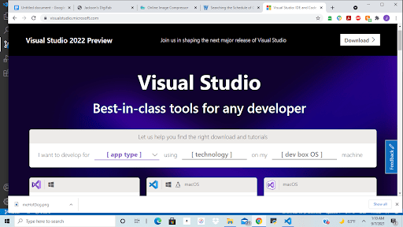
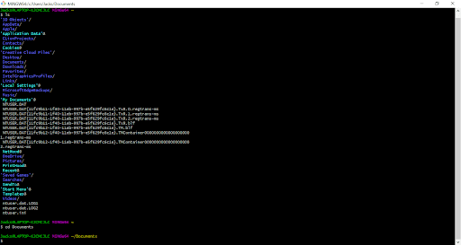
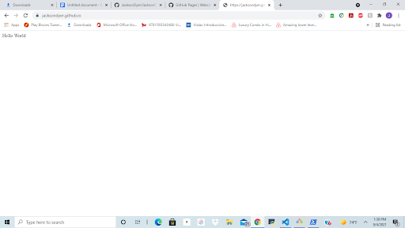

Week One: Making The Website
Ahoy! If you're seeing this it means my first project in DigiFab has been at least a marginal sucsess.
My journey began with downloading Visual Studio and Github and making an account for both. I started to work in the Github terminal and following the directions of professor Dunaway and Bret Lotti, I was able to get the backend of my webpage working!
A New Language: I've done some coding before, but this was my first time in HTML or in Visual Studio
GitHub can Git Outta Here: I had several really weird bugs with GitHub that Bret was kind enough to help me with. One of them was my computer asking me who I was and we had to do some work in the Windows PowerShell to continue. I probably owe Brett some candy or something for all the help he's giving me.
Baby Steps: My fledgling website says its first words!
My next step was to find a pretty template to use for my website on W3 Schools. I might have been able to make something from scratch, but if there was a way I could get a better output with even less work I'd be crazy to not pick that option.
After finding a pretty template, I took the first steps towards having a functioning website: Asking my smarter friends for help. With the help of Kobe Collision and Nick Huge I was able set up the template and start editing the appropriate sections. This is where my creativity started to shine through, and I think my work looked pretty good. It was a little weird making a website that I'm going to be using for the whole semester, becuase I had to leave a lot of TBA spaces. Just for the sake of clarity I was the first one to put those TBA tabs on the template, not Nick Hughes!
Pushing the website out was a pretty simple task. All I had to do was save all changes in the Source Control menu on the left, and make, name and push a new commit. For once in my life ya'll cant say I have commitment issues

Annnnd shes live! Is my website perfect? Not even close. Am I proud of it? Totally. Maybe all my links dont work, and maybe its copied off an online template, and maybe I was had to ask someone to hold my hand every 5 minutes while working on it, but I made a freakin website that at least at first glance: Doesnt look half bad.
I think the biggest thing that I have room for improvement on is the image quality. While working on the project I took screenshots and pasted them into a Google Doc before moving on, and for whatever reason that killed the image quality. I could also probably use some help in the spelling department. I also worry that I didnt write enough for my explanation of this weeks work, but hopefully I did okay!
Note To Self: Add "Website Devoloper" to my Linkedin page